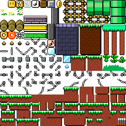
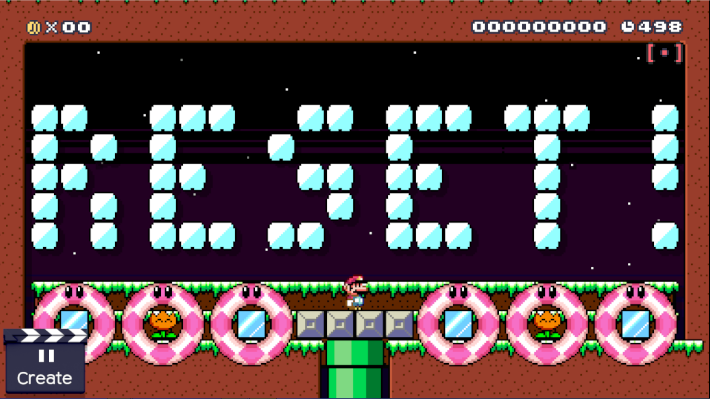
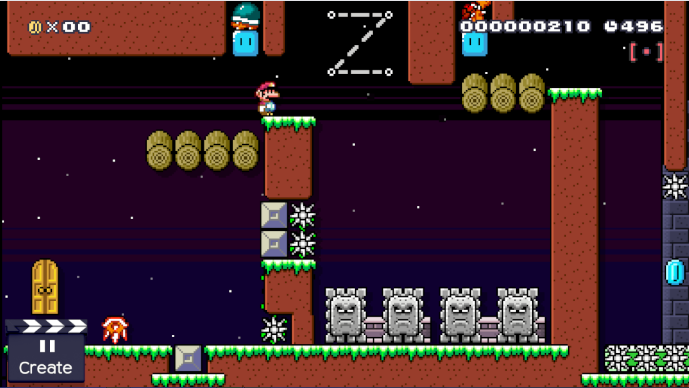
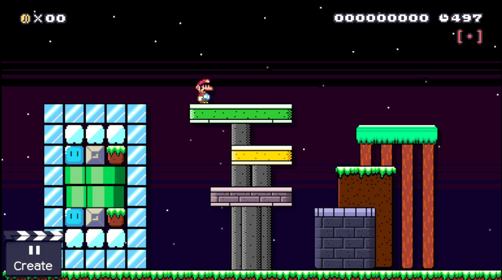
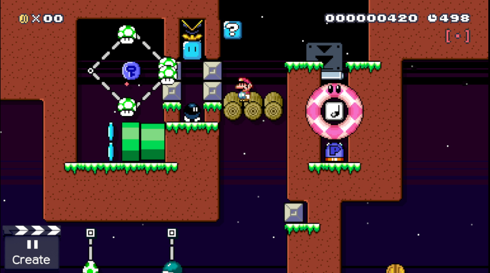

{kind=link}
{kind=link}
{kind=link}
{kind=link}
Why don't you use your Wii U to take screenshots? (If that's possible, that is. I think it is, cause I've seen people do it before)
Since: 11-02-17
|
this is a theme based off of a game i made called "slice night" it replaces the smw grass theme tileset image:  background image:  Screenshots:     download | | V |
|
Posted on 02-25-18, 06:13 pm
(rev. 1 by TheNawab on 03-07-18, 06:44 pm)
|
Since: 03-04-18
|
Hey can I use the background image for my own mod? _________________________ -h
|
|
Posted on 03-06-18, 09:19 pm
|

Since: 05-21-17
From: Final Destination |
That looks nice, but screenshots would be great. And I mean that in general. _________________________ YouTube |
|
Posted on 03-06-18, 09:35 pm
(rev. 1 by
Hüseyin the Mighty on 03-06-18, 09:36 pm) |
Since: 08-09-17
From: Bardoli, India |
I added the screenshots :) |
|
Posted on 03-07-18, 06:45 pm
|
Since: 11-02-17
|
That looks nice, but screenshots would be great. And I mean that in general. yes screenshots would be great. me having a pc thats actually POWERFULL enough to run cemu would be great.
|
|
Posted on 07-19-18, 09:06 am
|

Since: 05-17-17
From: Mushroom Kingdom |
Old 3DS XL info:
I used to have a 3DSafe A9LH V11.3.0-36U with Luma in my CTRNAND. Since ReiNAND Reibooted and Re-Reileased, I "switch"ed back. Right now, I have boot9strap with Luma 8.0 as my CFW. Though, I'd like to see other CFW's for B9S. |
|
Posted on 07-20-18, 04:09 pm
|
Since: 11-02-17
|
Why don't you use your Wii U to take screenshots? (If that's possible, that is. I think it is, cause I've seen people do it before) yeah, i dont have a wiiu, at all |
|
Posted on 07-26-18, 10:27 am
|